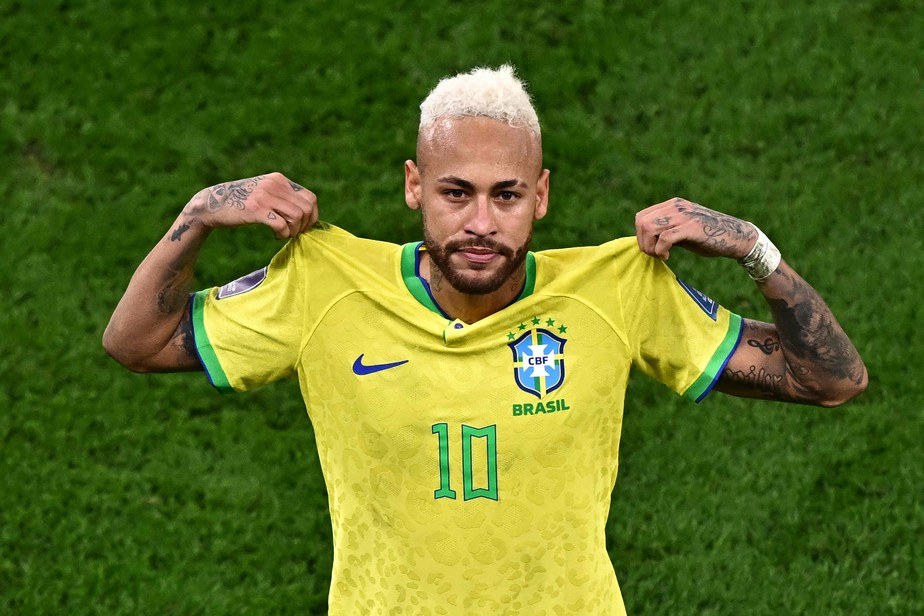

Lesão de Neymar preocupa a comissão de Carlo Ancelotti antes da Copa do Mundo

foto: Anne-Christine Poujoulat
Portal: O Globo
Lesão de Neymar preocupa a comissão de Carlo Ancelotti antes da Copa do Mundo
No dia 18 de maio, aconteceu a convocação da seleção brasileira para a Copa do Mundo. Entre os nomes anunciados, o que mais foi comentado pela mídia de jornalistas e torcedores foi a presença do camisa 10, Neymar Jr.
Desde então, Neymar não voltou a atuar pelo Santos, e foi constatado para a CBF que teve uma lesão leve na panturrilha direita, o que o deixaria fora por cerca de 10 dias. Porém, desde terça-feira (26), surgiram notícias de que o problema pode ser mais grave do que o esperado e que poderia ser um edema na panturrilha direita.
Nesta quarta-feira (27), o camisa 10 realizou exames na Granja Comary, centro de treinamento da seleção brasileira. Com isso, cresce a chance dele desfalcar o Brasil nos amistosos contra Panamá e contra o Egito.
A situação preocupa a comissão técnica. Caso os exames apontem uma lesão mais séria, Carlo Ancelotti poderá optar pelo corte de Neymar da convocação final da Copa do Mundo ou mantê-lo no elenco para recuperação durante a competição.